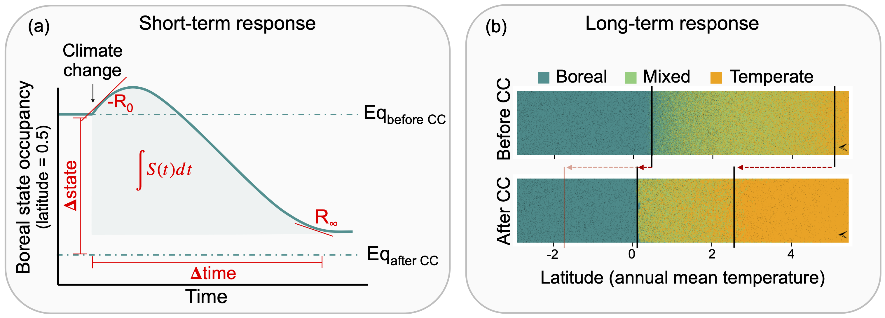
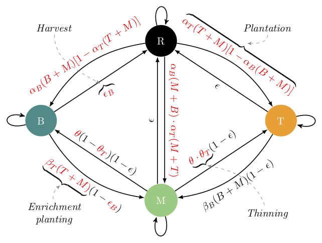
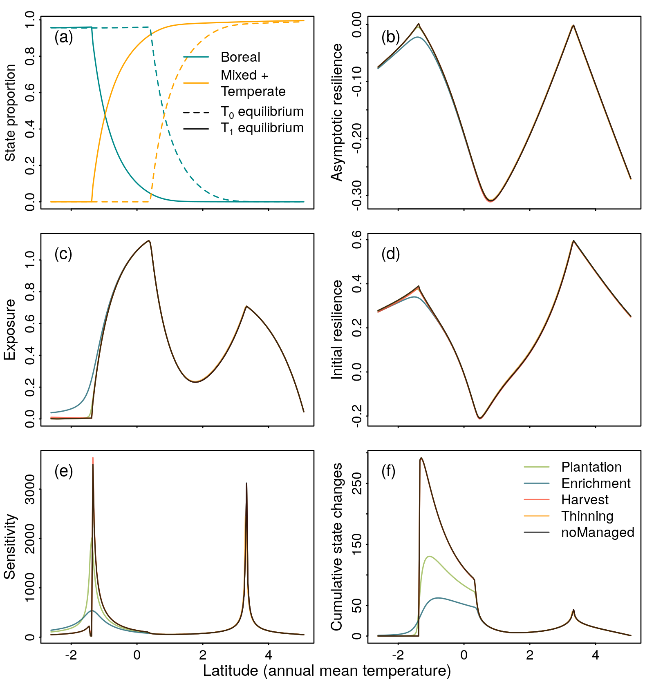
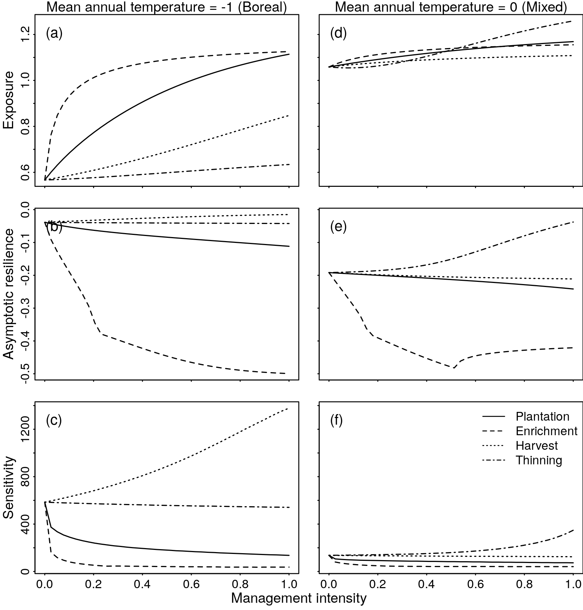
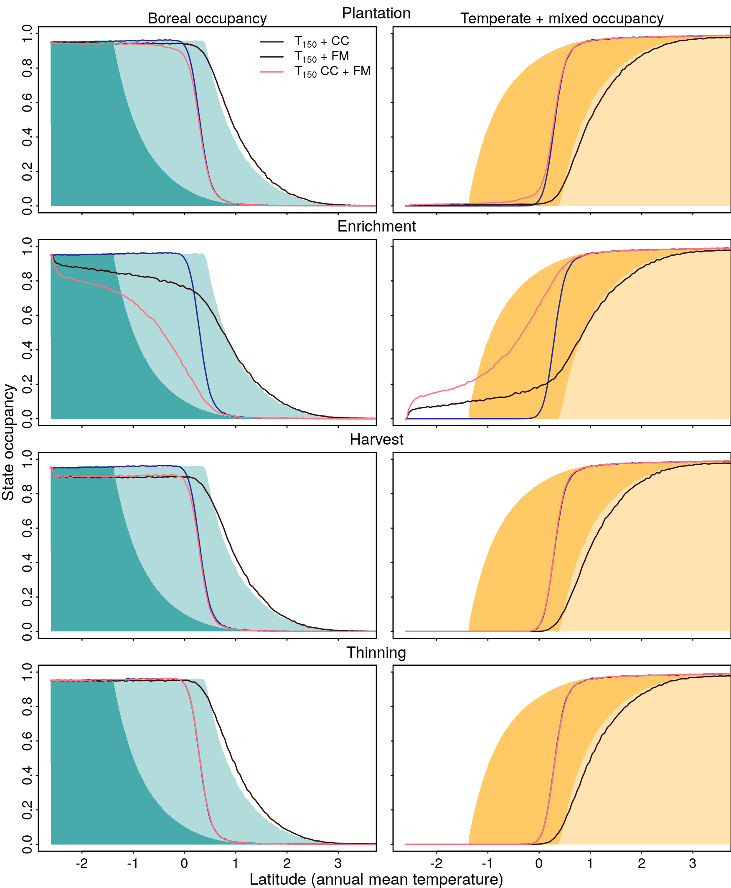

Introduction
There is a growing concern in how tree species will respond to climate change, and how fast they can migrate to keep pace with warming temperature. Correlative statistical models have projected large range shifts following warming temperature, such as the migration of plant species hundreds of kilometers northward by the end of this century (Malcolm et al. 2002; Mckenney et al. 2007). While it is true that the range of short-lived mobile species may keep pace with climate change (Chen et al. 2011), the range of long-lived tree species generally does not (Harsch et al. 2009; Zhu, Woodall, and Clark 2012). In fact, trees of eastern North America have shifted their range limits at less than 50% of the pace required to keep up with warming temperature (Sittaro et al. 2017). This mismatch between climate conditions and forest community composition leads us to anticipate maladaptation of trees to their environment, and therefore a possible loss of future forest productivity (Aitken et al. 2008). Quantifying the mechanisms determining species range limits is, therefore, critical for formulating adaptive management strategies (Becknell et al. 2015).
Range limits of forest trees is driven by colonization and extinction dynamics (Levins 1969; Hanski 1998; Holt and Keitt 2000). The metapopulation theory predicts the boundary of a species’ range occurs where the colonization rate equals the extinction rate, wherever habitat is available (Holt and Keitt 2000). Assuming that colonization and extinction rates depend on temperature, then we expect range limits to change with climate warming. However, colonization and extinction rates depend on many processes other than climate such as dispersal ability, establishment of propagules, survival and growth until maturity (Jackson and Sax 2010; Schurr et al. 2012). Colonization and extinction rates also depend on each species’ life-history traits as well as on the nature and recurrence of forest disturbances (Butterfield et al. 2019; Schurr et al. 2012). Changes in any of these factors are likely to lead to colonization credit for some species whereby suitable habitat is left unoccupied (Jackson and Sax 2010; Cristofoli et al. 2010), or to extinction debt whereby populations persist in unsuitable habitats (Kuussaari et al. 2009; Tilman et al. 1994). Accordingly, because of their slow demographic rates, eastern North American trees will have delayed range shifts due to extinction debt at the trailing edge of their range and colonization credit at the leading edge (Talluto et al. 2017).
Forest management provides an opportunity to reduce colonization credit and extinction debt and, therefore, accelerate range shift to help trees keep pace with climate warming. Although some management practices, such as assisted migration (Peters and Darling 1985), have been proposed as a potential tool towards this end (e.g. Gray et al. 2011), there has been extensive debate about its effectiveness with no definite conclusion (e.g. McLachlan, Hellmann, and Schwartz 2007; Vitt, Havens, and Hoegh-Guldberg 2009; Ricciardi and Simberloff 2009; Schwartz, Hellmann, and McLachlan 2009). The truth is, temperature is warming and there is an increased need to consider the future environmental conditions in the adaption of forest management practices (Keenan 2015; Ameztegui et al. 2018). Reduce colonization credit and extinction debt to accelerate tree range shifts can be obtained through different management approaches involving different ecological processes. For instance, large-scale harvesting may reduce extinction debt by removing maladapted individuals at the trailing edge, and also reduce colonization credit by reducing competitive interactions at the leading edge (Leithead, Anand, and Silva 2010; Steenberg, Duinker, and Bush 2013; Brice et al. 2020). Similarly, stand thinning could improve the competitive ability of certain tree species that thrive in forest gaps. Yet another management option would be the planting of novel species or genotypes in open areas, or enrichment planting in mature stands, which could favor the desired successional pathways. These examples show how we can use ecological knowledge to adapt management practices to reduce colonization credit and extinction debt.
In this study, our main objective was to assess how forest management can accelerate the response of the boreal-temperate ecotone to warming temperature by reducing colonization credit and extinction debt. We first established a general modelling framework based on the metapopulation theory, to determine how different management practices affect the processes driving range dynamics. We then assessed the effectiveness of these practices to move and maintain species in their optimal climate envelopes, using comparative simulations. Our empirical model accounts for colonization and extinction dynamics, along with competitive exclusion and invasion processes, to predict how the boreal-temperate ecotone responds to climate warming (Vissault et al. 2020). Our model was initially calibrated and validated with data from over 40,000 plots from eastern North America and integrates the effect of plantation, enrichment planting, harvest and thinning on the colonization and extinction dynamics of temperate deciduous and boreal conifer stands.
We tested the effectiveness of the four management practices by quantifying both the short-term and the long-term dynamics after climate warming (Figure 1). The short-term and long-term response of different tree species to disturbance may differ, yet most ecological studies focus only on the long-term response. The short-term response (or transient dynamics) is defined here as the period a forest stand at equilibrium takes to reach a new equilibrium after a disturbance (Hastings 2004). Characterizing short-term dynamics along with the long-term equilibrium is crucial when planning adaptive forest management strategies, given the slow response of forest ecosystems to environmental changes (Hastings 2004; Svenning and Sandel 2013; Ezard et al. 2010). More specifically, we first analyzed how each of our selected management practices affects the resilience, state change, and time to reach the novel equilibrium, using five metrics of transient dynamics in a spatially implicit version of the model. Finally for the long-term response, we developed a spatially explicit version of the model, to consider the dispersal limitations of trees and stochastic events. Specifically, we quantified how each of the management practices accelerates the northward range shift of the boreal-temperate ecotone in a landscape grid. These analyses might guide future empirical studies by revealing the potential effect of forest management in accelerating the response of forest to climate warming and thus contribute to the advancement of adaptive management practices.

Methods
Modelling forest range limits and management practices
A classical model to study spatial dynamics at the regional spatial scale comes from Levins’ metapopulation theory (Levins 1969). The theory is particularly suitable to describe the mosaic of forest successional stages in a landscape constantly changing because of small and large natural disturbances. The model describes metapopulation as a set of patches that are either occupied or empty and connected by dispersal. The dynamics of the metapopulation is given by individuals arriving and establishing in empty patches through the process of colonization (\(\alpha\)), and occupied patches becoming empty through the process of extinction (\(\varepsilon\)):
\[ \frac{dp}{dt} = \alpha(1 - p) - \varepsilon p \]
Where \(p\) is the proportion of occupied patches. We can further extend this model to incorporate the environmental gradient by turning the demographic parameters (\(\alpha\) and \(\varepsilon\)) into functions of climate conditions. As a result, we can derive range limits as the set of environmental conditions where the extinction rate equals the colonization rate (Holt et al. 2005). Relaxing the assumption of one single species dynamics, we can consider multiple species competing for the same patches by having both demographic parameters varying as a function of species interactions (Gravel and Massol 2020). This theoretical framework in a spatially explicit landscape grid, allows us to account for both the long-life cycle and slow migration rates of trees, along with species interaction, to predict the response of trees to climate warming.
We used a State and Transition Model derived from this theory and parameterized for eastern North American forests (Vissault et al. 2020). This approach models the dynamics of three discrete forest compositions along a gradient of temperature: (B)oreal, (T)emperate, and (M)ixed forest states; and the (R)egeneration (or empty) state. Further than the colonization (\(\alpha\)) and extinction (\(\varepsilon\)) processes driving the transitions between empty (R) and occupied (by either B, M or T) patches, the model describes species interaction through the mechanisms of succession and competitive exclusion. On one hand, succession (\(\beta\)) happens when either an occupied patch of pure boreal or temperate is colonized by species from the opposite composition, becoming then a mixed state. On the other hand, competitive exclusion (\(\theta\)) drives the transitions from mixed patches to either pure boreal or temperate, depending on the competitive ability of each of the pure states.

The functions describing transitions among states were evaluated using over 40,000 plots from the eastern North American forest inventory database, located between 57\(^{\circ}\)W to 96\(^{\circ}\)W and 35\(^{\circ}\)N to 52\(^{\circ}\)N (Vissault et al. 2020). Time was discretized because of the seasonality of forest dynamics and the nature of forest inventory data. This time-discrete Markov Chain approach is dynamic as each parameter is calculated based on previous environmental conditions (annual mean temperature and annual precipitation) only, and the transitions are dependent on the neighborhood proportion (Figure 2). For each plot (measured between 1960 and 2010) and each measure (standardized to a 5 year interval via rescaling), the forest states (B, M, and T) were classified following its species composition. A stand was classified as T whenever one of the following 7 species was present and none of the boreal species: Prunus serotina, Acer rubrum, Acer saccharum, Fraxinus americana, Fraxinus nigra, Fagus grandifolia, Ostrya virginiana, and Tilia americana; alternatively, a stand was classified as B whenever one of the following 8 species was present and none of the temperate species: Picea mariana, Picea glauca, Picea rubens, Larix laricina, Pinus banksiana, Abies balsamea, Thuja occidentalis. The stand was classified as mixed when both boreal and temperate species were present. The regeneration plot was classified when the basal area was inferior to 5m\(^2\) ha\(^{-1}\), irrespective of the composition. Transition probabilities (scaled to respect the same time interval to all plots) were estimated by maximum likelihood. Importantly, the use of extensive forest inventory data allowed us to calibrate and validade the parameters of the model to predict with good confidence the distribution of the boreal, mixed and temperate states using current environmental data (Vissault et al. 2020).
Adapted forest management: reducing the gap between potential and actual forest distribution
It is expected with warming temperature that the distribution of the boreal-temperate ecotone will shift northward, however, due to slow demographic rates and limited dispersal of forest trees, these forest compositions may lag behind climate change (Talluto et al. 2017; Vissault et al. 2020). Here we define how four management practices may reduce this gap between potential and realized forest distribution after warming temperature. The four management practices implemented in the model are plantation and enrichment planting to potentially reduce colonization credit, and harvest and thinning to potentially reduce extinction debt. The rationale of these management practices is to favor the spread of the temperate forest when the climate context allows temperate tree regeneration, and to reduce maladaptation of boreal forest when temperate trees should dominate. The following sections detail the ecological assumptions and mathematical formulation for each practice implemented in the model.
Managing to reduce colonization credit
Colonization of temperate species beyond the leading edge of their distribution may depend on many factors such as climate conditions, competitive ability, and seed sources. The first factor limiting the colonization of a population beyond its range is the environmental conditions. Once the environmental limitation is relaxed with warming temperature, species interactions such as competition for light may limit the development of regenerating individuals (e.g. Bianchi et al. 2018). Finally, seed source is a density-dependent process which, associated with the slow migration rate of trees, contributes to the lack of colonization beyond the population range limits. In the context of managing ecological processes, some of these factors can be modified with forest management. Here we choose two management practices that may operate at different spatial scales to simulate density-independent colonization: plantation (i.e. assisted migration) at the large spatial scale, and enrichment planting at the local spatial scale. Enrichment planting, contrary to plantation relate to the plantation of tree in a mature stand, which enrich it in the type of the planted species. Following warming temperature, plantation and enrichment planting of temperate species should overcome dispersal limitation and the lack of seed sources and may increase the northward range shift of the temperate-mixed regions by colonizing stands beyond the current distribution.
Plantation of temperate stands
In our model, colonization of regeneration stands by either boreal, mixed or temperate depends on the capacity of boreal and temperate species to establish (\(\alpha_B\) and \(\alpha_T\)), and their proportion in the neighboring stands. The plantation practice is modelled as an increase in the probability of regeneration stands to become temperate \(P(T|R)\). A proportion \(p\) of available regeneration stands are directly converted each time step into the temperate forest. Only the remaining regeneration stands (\(1-p\)) follow natural succession. Plantation thus involves an additional parameter \(p\) that modifies the following probabilities:
\[ \begin{aligned} P(T|R) &= [\alpha_T (T+M) \times (1-\alpha_B (B+M))] \times (1 - p) + p \\ P(B|R) &= [\alpha_B (B+M) \times (1-\alpha_T (T+M))] \times (1 - p) \\ P(M|R) &= [\alpha_T (T+M) \times \alpha_B (B+M)] \times (1 - p) \end{aligned} \]
where \(p\) is the proportion of R stands that are planted per time step. Note that when \(p=0\), the natural dynamics occurs and when \(p=1\), \(P(T|R)=1\), \(P(B|R)=P(M|R)=0\).
Enrichment planting of temperate trees on boreal stands
Invasion of temperate species on boreal stands is a function of the capacity of temperate species to colonize boreal forest \(\beta_T\), and the proportion of available sources, i.e. the neighboring stands of mixed and temperate trees. Invasion only applies to stands that are neither disturbed nor harvested: \(P(M|B) = \beta_T(T + M)(1- (\varepsilon \times (1 - h) + h))\). Enrichment planting of temperate species on boreal stands is modelled as an increase of the probability of boreal stands to become mixed. Among boreal stands available to invasion, a proportion \(e\) is directly assigned to mixed stands, representing the plantation of temperate trees. The colonization probability of temperate species establishing boreal stands after enrichment planting adds a parameter \(e\) to the model:
\[ P(M|B) = [(1- (\varepsilon \times (1 - h) + h)) \times \beta_T(T + M)] \times (1-e) + e \]
Where \(e\) is the proportion of available boreal stands (i.e., neither disturbed nor harvested) that are enriched at each time step. Natural dynamics occurs when \(e=1\), while direct conversion by forest management occurs when \(P(M|B)= 1- (\varepsilon \times (1 - h) + h)\).
Managing to reduce extinction debt
Different ecological mechanisms can explain extinction debt caused by delayed response of forest trees to warming temperature. Slow demographic rates along with dispersal limitations can delay the response of species to environmental changes (Dullinger et al. 2012). These life-history traits, associated with source-sink dynamics (Schurr et al. 2012), can increase considerably the extinction debt of tree populations following warming temperature. To reduce this delayed response, unadapted populations must disappear and therefore make room for the new population that is better adapted to the novel environmental conditions. Disturbance and competitive exclusion are two ecological processes suitable to influence the rate of extinction and, if well directed, reduce extinction debt. Here we choose harvest and thinning, which is a selective harvest within a stand, as complementary management practices that may influence disturbance and competitive exclusion. Harvest of boreal stands can simulate large spatial scale disturbances, such as fire, and transform a proportion of boreal stands in a regeneration state. Similarly, thinning of boreal species in mixed stands can simulate an increase in the fitness of temperate species which then can competitively exclude boreal species. Both harvest and thinning are intended to open space and reduce the proportion of boreal species, and therefore increase the likelihood of temperate species to shift northward.
Harvest of boreal stands
In the natural extinction model, boreal stands turn into a regeneration state only after disturbances, occurring at a probability (\(\varepsilon\)). Harvest is modelled as an increase in the probability of boreal stands to become regeneration \(P(R|B)\). A proportion \(h\) of boreal stands that are not disturbed, is converted into regeneration stands, featuring the cut of all trees. This proportion of boreal stands is thus excluded from following natural dynamics. Harvest thus involves an additional parameter \(h\) that modifies the following probabilities:
\[ \begin{aligned} P(R|B) &= [\varepsilon \times (1 - h)] + h \\ P(M|B) &= (1- (\varepsilon \times (1 - h) + h)) \times \beta_T(T + M) \end{aligned} \]
Where \(h\) is the proportion of boreal stands that are harvested at each time step. If \(h=1\), no boreal stands will be maintained, and only natural disturbance occurs when \(h=0\).
Thinning of boreal trees in mixed stands
The exclusion of boreal trees by temperate trees in mixed stands is a function of the instability of the mixed stand \(\theta\) and the ratio of competitive abilities between temperate and boreal species, \(\theta_T\). Thinning of boreal species in mixed stands is modelled as an increase of the probability of mixed stands to become temperate by two different ways.
First, thinning of boreal species can be translated into a decrease of the persistence of the mixed stand (\(P(M|M) = 1-\theta\)), thus increasing \(\theta\):
\[ \theta_{m} = [\theta \times (1 - s1)] + s1 \]
Second, thinning of boreal species can be translated into an increase of the ability of temperate species to exclude boreal ones by competition:
\[ \theta_{T, m} = [\theta_{T} \times (1 - s2)] + s2 \]
It is unclear if we need to distinguish between the two processes. The rationale is that the proportion \(s1\) of mixed stands that are managed this way is directly converted into temperate. It means that \(s2\) should at least be equal to \(s1\). \(s2\) can be greater than \(s1\) if thinning further boost the competitively (fitness) of temperate species. For a parsimonious approach, it is reasonable to set \(s1=s2\). These modifications directly affect \(P(T|M)\) and \(P(B|M)\):
\[ \begin{aligned} \theta_{m} &= [\theta \times (1 - s)] + s \\ \theta_{T, m} &= [\theta_{T} \times (1 - s)] + s \\[6pt] P(T|M) &= \theta_m \times \theta_{T,m} \times (1 - \varepsilon) \\ P(B|M) &= \theta_m (1 - \theta_{T,m}) \times (1 - \varepsilon) \end{aligned} \]
Where \(s\) is the proportion of mixed stands that are available (not disturbed) and where thinning is applied, per time step. When \(s=1\), \(P(T|M) = 1\) and \(P(B|M) = 0\).
Range shift analysis
Analysis of the transient dynamics after warming temperature
We used the spatially implicit version of the model at equilibrium with current climate conditions to test the effect of forest management on the short-term dynamics following warming temperature. To do so, we applied warming temperature and focused on the dynamics of the transient period of the four forest states until they reach the new steady state. Steady state was considered as being reached when the difference between the current and previous state was inferior to \(10^{-7}\) for 10 steps. We computed five metrics characterizing the transient dynamics over a latitudinal gradient of annual mean temperature ranging from -2.61 to 5.07\(^{\circ}\)C, representing the ecotone gradient from boreal dominant species to a temperate dominant composition. This gradient of temperature can be expressed as a straight line going from Montreal to Chibougamau, in Quebec, Canada. While temperature varied, annual mean precipitation was fixed to mean value extracted from the database (998.7 mm), as precipitation has relatively small effects on the model compared to temperature (Vissault et al. 2020). For each initial temperature condition (i.e. latitude position), temperature increased of 0.09 \(^{\circ}\)C at each time step for the first 20 steps (100 years; RCP4.5) and then remained constant until the model reached the steady state. As we use a linear increase of temperature to represent the boreal-temperate ecotone (ranging from -2.61 to 5.07\(^{\circ}\)C) instead of a real landscape, the RCP scenarios are based in the mean global projections (IPCC 2013). We further tested the RCP8.5 scenario, however, the response to forest management was roughly similar to RCP4.5, and the only change was the latitudinal position that shifted farther north due to a stronger effect of warming temperature.
The five metrics characterizing the transient phase (Boulangeat et al. 2018) after warming temperature for each latitude position allowed us to fully describe the transient phase and the effect of forest management during this phase. The first two metrics are the asymptotic and initial resilience as measures of local stability derived from the Jacobian Matrix \(J\) at the new equilibrium (Arnoldi, Loreau, and Haegeman 2016). \(J\) was numerically calculated using the R package rootSolve (Soetaert and Herman 2009; Soetaert 2009). The asymptotic resilience (\(R_{\infty}\)) is the leading eigen value of \(J\), and quantifies the asymptotic rate of return to equilibrium after small perturbation. The more negative \(R_{\infty}\), the greater asymptotic resilience. Initial resilience (\(-R_0\)) is the leading eigen value of the following matrix:
\[ M = \frac{-J + J^T}{2} \]
Positive values of \(-R_0\) indicate a smooth transition to the new equilibrium whereas negative values indicate reactivity, i.e. an initial amplification against final equilibrium. The third metric is the exposure of the ecosystem states (\(\Delta_{state}\)), defined by the difference in state proportion between pre- and post-temperature warming (Dawson et al. 2011). The fourth metric is the return time (\(\Delta_{time}\)) or ecosystem sensitivity, which is estimated by the number of steps of the transitory phase, where each time step of the model is equal to 5 years. The last metric is the cumulative amount of changes in the transitory phase, or ecosystem vulnerability (Boulangeat et al. 2018). It is defined as the sum of all changes in the states after warming temperature and is obtained by the integral of the states change over time (\(\int S(t)dt\)). These five metrics together can summarize the multidimensionality of the response of a system to external disturbances.
We used five distinct simulation scenarios: natural dynamics without forest management, 0.25% of plantation, 0.25% of enrichment planting, 1% of harvest and 0.25% of thinning, in an annual rate. The above values were chosen to maintain a certain degree of reality. In the Canadian province of Quebec, about 1% of the forest territory is harvested annually. Of this 1% harvested, only 20 to 25% is followed by planting. To our knowledge, enrichment planting and thinning of a specific species are rarely used in Quebec and should not overpass the other practices, hence we choose to analyse the same amount as the plantation. To further quantify the effect of increasing the intensity of forest management from 0 to 100% for each practice, we choose two locations from the gradient of temperature in which forest management had the most effect on the metrics of transient dynamics: -1 and 0\(^{\circ}\)C of annual mean temperature which represents the leading and trailing edge of the ecotone. To overcome the multidimensionality of the simulations, we developed an online application to quantify the five metrics of the transient dynamics for any location of the temperature gradient, using any intensity of forest management, with three scenarios of warming temperature: https://ielab-s.dbio.usherbrooke.ca/STM-managed.
Analysis of the northward range shift after warming temperature
We used a spatially explicit version of the model with an artificial landscape (lattice) representing a latitudinal gradient between temperate and boreal biomes, allowing us to account for explicit dispersal limitations and stochastic dynamics, to test the capacity of forest management to accelerate northward range shift of the boreal-temperate ecotone. The latitudinal gradient of the landscape grid is defined using the same annual mean temperature range of the spatially implicit model (-2.61 to 5.07\(^{\circ}\)C), with cells of 300 m\(^2\), to capture the whole ecotone from boreal to temperate dominant species, with constant annual mean precipitation of 998.7 mm. Sensitivity analysis showed that range shift after warming temperature increased with larger grid cells (from 0.1 to 5 km\(^2\)), but the influence was stronger in cells larger than 1 km\(^2\). Although the smaller the cell the better we model dispersion, smaller cells are computationally expensive; therefore the size of 300 m\(^2\) had a better compromise between these two factors. Further, while the cell size affects the absolute value of range shift, it does not affect the relative effect of the different forest management strategies. The prevalence of each state at time \(t + 1\) was calculated considering the stand composition of the eight neighbors’ cells and the temperature and precipitation condition of the cell at time \(t\). The state of the current cell at time \(t + 1\) was then drawn from the matrix of transition probabilities. The effect of warming temperature in the landscape dynamics is included by increasing temperature of 0.09 \(^{\circ}\)C for each cell at each time step for the first 20 steps (100 years; RCP4.5). Similar to the same approach, we further performed simulations using the RCP8.5 scenario, and the results are shown in the Figure S5. The spatially explicit version of the model was bind into an R package stored on GitHub (Vieira 2020). We used the released version v2.0 to run the simulations for this article.
We ran three simulations to compare the relative importance of warming temperature, forest management, and their interaction with the equilibrium distribution in future climate conditions. The intensity of the four management practices was the same as used in the first approach. The model ran for 150 years under three different scenarios: (i) only climate change, (ii) only one practice of forest management, and (iii) climate change and one practice of forest management at a time. These three simulations were then compared with current (\(T_0\)) and future (\(T_1\)) forest distribution at equilibrium with the climate as reference points. For each simulation, we quantified the boreal and the mixed + temperate occupancy over the latitudinal gradient of mean annual temperature. As the chosen time scale (150 years) and management intensity may not be large enough to detect the response of forest to warming temperature and forest management, we ran the same configuration of simulations but increasing both time and management intensity. The running time of each simulation was increased to 250, 500 and 1000 years (Figures S3), and management intensity for all practices increased to 2, 5, 10 and 20% (Figure S4). We performed 15 replications varying the initial landscape for each simulation, however, we found little variation between replicates, and therefore choose to omit the confidence intervals for the sake of simplicity.
Results
Effect of Forest Management on Transient Dynamics After Climate Change
Plantation and enrichment planting of temperate species, which simulate the payment of colonization credit, were the only two practices affecting the transient dynamics after warming temperature (Figure 3). When the system was perturbed with warming temperature, enrichment planting promoted the shift of forest states to a new equilibrium in the boreal region (Figure 3 c). Plantation and enrichment planting reduced by about 40 and 80%, respectively, at around -1.5\(^{\circ}\)C the time for the forest to reach the new equilibrium after warming temperature (Figure 3 e). The cumulative state changes (Figure 3 f) integrate the changes in both exposure and sensitivity. Forest management reduced considerably the cumulative state changes in the boreal/mixed transition region by (i) reducing the time to reach the new equilibrium, and slightly increased cumulative state changes in the boreal region by (ii) increasing the shift of forest states to a new equilibrium. In both boreal/mixed and mixed/temperate transition regions, asymptotic resilience was close to zero (weak resilience to perturbations) and initial resilience greater than zero (smooth response to perturbations). Enrichment planting altered both resilience metrics in the boreal/mixed transition region only, where asymptotic resilience was increased (Figure 3 b) and initial resilience reduced (Figure 3 d). Reducing colonization credit through plantation and enrichment planting of temperate species were effective in changing the transient dynamics after warming temperature, helping forest to keep pace with climate change.

All management practices altered the transient dynamics after warming temperature, with the greatest impacts at the edge of temperate/mixed tree distribution and slightly into the boreal forest (Figure 3). Plantation and enrichment planting had non-linear response to management intensity in the boreal region (Figure 4); while enrichment planting and thinning had non-linear responses in the temperate/mixed region. Overall, increasing plantation and enrichment planting intensity increased exposure and asymptotic resilience and reduced sensitivity at both spatial regions. Harvest of boreal species also increased exposure but reduced asymptotic resilience and increased sensitivity. Surprisingly, thinning of boreal species had a negative effect reducing asymptotic resilience and increased sensitivity at the boreal/mixed transition region. In conclusion, increasing management intensity can accelerate forest response to climate change by reducing colonization credit but can delay this response by reducing extinction debt. For the sake of simplicity, initial resilience and cumulative state changes are omitted in the Figure 4 and can be found in the supporting information (Figure S1).

Effect of Forest Management on Range Limits Shift Under Climate Change
We investigated how forest management affects the range limit shift of the boreal trailing edge and the temperate + mixed leading edge using spatially explicit simulations accounting for dispersal limitations and stochastic dynamics (Figure 5). After 150 years with only forest management (\(T_{150}\) + FM), both the boreal trailing edge and the temperate leading edge slightly shifted southwards. After 150 years with temperature warming in the first 100 years (RCP 4.5), both the boreal and temperate range limit shifted northward. However, boreal receded to a certain extent, and the smooth transition to temperate through mixed was reduced to an abrupt transition (\(T_{150} + CC\)). Lastly, with both warming temperature and forest management interacting, enrichment planting of temperate species was the only practice to increase both the boreal and the temperate northward shift. Plantation had a very small effect close to the transition limit, harvest reduced the proportion of boreal states but had no effect on range shifts, and thinning also did not have any effect on range limits. Reducing colonization credit, through enrichment planting, increased the northward shift of forest states only when interacting with climate change, creating a smooth transition from boreal to mixed state.

Simulation time and management intensity of figure 5 were kept small for the sake of realism, but we further tested how increasing management intensity and time of simulation will affect range limits shift of boreal and temperate stands. These simulations better reveal differences between scenarios. Increasing simulation time up to 1000 years was just enough for both boreal and temperate range limits to reach the expected equilibrium, and reduce colonization credit with 0.25% of plantation and enrichment planting of temperate species (Figure S3). Increasing management intensity of up to 20% per year had different effects according to the four practices. Plantation and enrichment planting at such intensity increased northward range limits shift linearly, and overpassed the expected equilibrium with future warming temperature (Figure S4). Harvest of boreal species at high intensity reduced the proportion of boreal and increased the proportion of regeneration state but did not break the abrupt transition into a smooth shift between boreal and mixed states. Thinning of boreal species increased the transition from mixed to temperate stands but did not have any effect on range limits shift.
Discussion
There is an increasing need to investigate how forest biomes will respond to warming temperature, and how forest management can mitigate the negative impacts of this perturbation. We developed a simple and informative modelling framework based on the metapopulation theory that let us to (i) establish the link between forest management and the ecological processes setting range limits, and to (ii) investigate the effect of forest management on the response of the boreal-temperate ecotone to climate change. Our study suggest that all management practices are expected to impact forest dynamics in the short term (transient phase). However, to reduce the period of transient dynamics after warming temperature and increase range limit shifts at large spatial scale in the long term, only planting temperate tree stands and enrichment planting of temperate trees in boreal stands are likely to play a role by paying the colonization credit. Our results, based on two complementary simulation techniques, suggest that forest management could help the boreal/temperate ecotone keep pace with climate change. This theoretical investigation supported by long-term data provides new expectations to design future experiments testing the potential of forest management to adapt to climate change. It should guide future managers to take into account both natural and anthropogenic perturbations on forest dynamics.
How plantation and enrichment planting can reduce colonization credit?
Although climate change is expected to drive a shift in forest composition by favoring temperate over boreal trees, the boreal-temperate ecotone is lagging behind climate change (Talluto et al. 2017; Vissault et al. 2020). Our results suggest that plantation and enrichment planting of temperate species on the boreal region can reduce this lag by reducing the transient period and increasing the northward range shift of the boreal-temperate ecotone. To date few empirical studies have tested how assisted migration increases northward range shift of trees. For instance, modelling the plantation of tree species more suitable to future climate is predicted to increase resilience indicators such as carbon stocks and tree species diversity (Hof, Dymond, and Mladenoff 2017), and therefore plantation is assumed to increase tree range shift under climate change. Using the same rationale, simulating the plantation of climate suitable tree species have been shown to increase both biomass productivity and species diversity in multiple scenarios of climate change (Duveneck and Scheller 2015). We found enrichment planting slightly increased asymptotic resilience, which means a faster recovery to equilibrium after climate change (Figure 3). This is similar to simulations of species composition change over time, from which resistance and resilience have been explicitly assessed, suggesting that forest management had limited ability to increase these indicators in the face of climate change (Duveneck and Scheller 2016).
Why is enrichment planting practice more efficient than planting?
Enrichment planting of temperate trees into boreal areas had a stronger effect on both reducing the transient period and increasing range shift when compared with planting. This is due to three different mechanisms. First, it is related to the prevalence of the different forest states and the dependence of the management scenarios to these values. The intensity of forest management in the model is relative to the state abundance; hence 0.25% of boreal stands being enriched is much higher than 0.25% of regeneration stands being planted. That explains the need to increase planting intensity beyond 0.25% to increase the boreal northward range shift (Figure S4). Second, management practices are not spatially organized. While enrichment planting is necessarily applied on boreal stands, planting is applied in regeneration stands that are distributed across the landscape. The third mechanism is however independent from the design of the management scenarios. The number of transitions to reach the expected state at equilibrium with climate depends on the management practice; enrichment planting needs only one transition (B -> M) while planting temperate species needs two (R -> T -> M). These results suggest that enrichment planting in local gaps has the best potential compared to plantation to assist forest keep pace with climate change. Similarly, tree recruitment of northern temperate forests was more effective in the presence of local canopy gaps compared to recruitment on open areas after clearcut (LePage et al. 2000). It means enrichment planting in local gaps is expected to be more effective, but this practice alone may not be as effective as expressed here because empty places are needed to perform this practice. Naturally, canopy gaps in mixed forests facilitate the establishment of temperate species (Leithead, Anand, and Silva 2010). Therefore, enrichment planting may be more effective when associated with other practices such as thinning.
Why does reducing colonization credit increase range shift but reducing extinction debt does not?
Reducing extinction debt by increasing the frequency of disturbance (natural or anthropogenic) is expected to drive range shift by eliminating maladapted species that would persist for a long period, and then create colonization opportunities for advancing species (Renwick and Rocca 2015; Kuparinen, Savolainen, and Schurr 2010). For instance, moderate disturbance has been shown to amplify compositional shift to warm-adapted species in the boreal-temperate ecotone of Quebec (Brice et al. 2019). Here intensifying disturbance by increasing harvest of boreal stands did not affect the rate of northward range shift after warming temperature. This result corroborates with Vanderwel and Purves (2014) in which harvest of boreal species amplifies transitions to early-successional forest type, but have no effect on the range shift of boreal conifers. Similarly, moderate disturbances increased the probability of transition from mixed to temperate stands, but had a small effect on the transition from boreal to mixed (Brice et al. 2020). Such lack of effect on range shift when reducing extinction debt may be explained by source-sink dynamics that, despite the increase in the extinction rate of patches due to harvest, increases the likelihood of harvested boreal stands becoming boreal in the future. Furthermore, limited dispersal may contributes to a lack of temperate colonization in harvested patches. The likelihood of harvested patches becoming boreal again may reduce if there is a demographic limit in the persistent boreal species (e.g. physiological responses Reich et al. (2015)), and further intensified if species better adapted to the new climate arrive (e.g. plantation), in which competitive exclusion will eliminate the less adapted species.
Thinning increases temperate tree range expansion, but does not affect boreal stands
We explored the hypothesis that selective harvesting of boreal tree species (thinning) on the mixed region would increase the proportion of temperate species, and therefore increase the regional pool to favor the colonization of temperate trees into the boreal region. Thinning indeed increased the proportion of temperate stands in the mixed region, because it helps competitive exclusion. Such expansion of the temperate range limits in response to harvest of boreal species corroborates with literature, where harvest has increased temperate species in the mixed region of Quebec (Boulanger et al. 2019; Brice et al. 2020). However, thinning did not have any effect on the range limit of boreal stands. In other words, temperate trees did not colonize boreal stands, even with increasing source pools. Such lack of temperate progression onto on the boreal region may be explained by the difficulty of temperate trees to settle in boreal stands due to priority effects and unfavourable substrates (Solarik et al. 2018, 2020). This effect is included in the model indirectly through the succession (mean \(\beta_{T}\) = 0.62) and colonization (mean \(\alpha_{T}\) = 0.99) parameters associated with the temperate stand. This may be the result of plant-soil feedbacks, or the importance of gaps for temperate tree regeneration. For instance, regeneration of temperate species such as red maple and red oak have been shown to be facilitated in gaps, while boreal species showed no difference (Leithead, Anand, and Silva 2010).
Limitations and future perspectives
We have argued that plantation and enrichment planting may have the potential to reduce colonization credit and therefore help forests to keep pace with climate change. However, further experiments are necessary as the four simulated practices in our study are an approximation of real management practices. For instance, we simulated thinning as selective logging boreal species in favor of temperate, while in practice, thinning generally focuses on reducing stand density regardless of the species being thinned. Such density reduction is tricky to address with our model because local abundances are not accounted for. There is generally a mismatch between our simulations at the community stand resolution with the management practices that occur at the population level. Aware of that, we call for studies taking account of forest dynamics at several organizational scales to complement our results with the inclusion of more details on local management practices. Demographic models are useful to predict local mechanisms such as species interaction scale up to determining species range limits at the metapopulation level (Ara’ujo and Rozenfeld 2013; Normand et al. 2014). However, these models are limited in the literature when compared with models at the metapopulation level (Hylander and Ehrl’en 2013). In our context, demographic models can test the effect of forest management in the growth, mortality and regeneration processes, and a landscape-level model such as ours helps better understanding how the effect of management practices scales up to a larger spatial scale. We should also cautiously interpret the effect of climate change as simulated here. Although it is predicted that drought intensity will increase in the future and may drive how the forest will respond to climate change (Greenwood et al. 2017), we have simulated only warming temperature, while precipitation remained constant. Some studies have shown tree species to be more sensitive to an increase in drought rather than temperature (e.g. white spruce Andalo, Beaulieu, and Bousquet 2005). Drought is, however, more a pulse disturbance (or shock) and should be investigated fully with different frequencies and intensities. The present study rather shows how communities could adapt to a continuous change in the environment and how management could help.
We have demonstrated here that management practices could help forest communities to cope with a fast change in climate along latitude. However, we can expect that the spatial distribution of different practices would interact and change the final outcomes. For instance, creating gaps with a selective harvest of boreal stands nearby the mixed distribution or the temperate tree plantations may create a synergy. Furthermore, we have simulated here the effect of four management practices alone, while the interaction between them may have an even greater effect. Our simulations show no effect of plantation and harvest on the northward range shift of the boreal-temperate ecotone at a short time scale of 150 years (figure 5). However, planting temperate trees after harvesting boreal stands may overcome the limitations of these two practices when applied individually, and therefore increase the northward range shift. Interacting management practices such as harvest and plantation, and applying these practices in particular locations may increase the potential of forest management to help forest keep pace with climate change. We propose future studies should focus on the interaction between the management practices, and how the spatial distribution of these practices alter the shift in tree range limit.
References
Aitken, Sally N., Sam Yeaman, Jason A. Holliday, Tongli Wang, and Sierra Curtis-McLane. 2008. “Adaptation, migration or extirpation: climate change outcomes for tree populations.” Evolutionary Applications 1 (1): 95–111. https://doi.org/10.1111/j.1752-4571.2007.00013.x.
Ameztegui, Aitor, Kevin A. Solarik, John R. Parkins, Daniel Houle, Christian Messier, and Dominique Gravel. 2018. “Perceptions of climate change across the Canadian forest sector: The key factors of institutional and geographical environment.” PLoS ONE 13 (6): 1–18. https://doi.org/10.1371/journal.pone.0197689.
Andalo, Christophe, Jean Beaulieu, and Jean Bousquet. 2005. “The impact of climate change on growth of local white spruce populations in Québec, Canada.” Forest Ecology and Management 205 (1-3): 169–82. https://doi.org/10.1016/j.foreco.2004.10.045.
Ara’ujo, Miguel B., and Alejandro Rozenfeld. 2013. “The geographic scaling of biotic interactions.” Ecography 37 (5): no–no. https://doi.org/10.1111/j.1600-0587.2013.00643.x.
Arnoldi, J. F., M. Loreau, and B. Haegeman. 2016. “Resilience, reactivity and variability: A mathematical comparison of ecological stability measures.” Journal of Theoretical Biology 389: 47–59. https://doi.org/10.1016/j.jtbi.2015.10.012.
Becknell, J M, a R Desai, M C Dietze, C a Schultz, G Starr, P a Duffy, J F Franklin, et al. 2015. “Assessing Interactions Among Changing Climate, Management, and Disturbance in Forests: A Macrosystems Approach.” BioScience 65 (3): 263–74. https://doi.org/10.1093/biosci/biu234.
Bianchi, Simone, Sophie Hale, Christine Cahalan, Catia Arcangeli, and James Gibbons. 2018. “Light-growth responses of Sitka spruce, Douglas fir and western hemlock regeneration under continuous cover forestry.” Forest Ecology and Management 422 (February): 241–52. https://doi.org/10.1016/j.foreco.2018.04.027.
Boulangeat, Isabelle, Jens Christian Svenning, Tanguy Daufresne, Mathieu Leblond, and Dominique Gravel. 2018. “The transient response of ecosystems to climate change is amplified by trophic interactions.” Oikos, 1–12. https://doi.org/10.1111/oik.05052.
Boulanger, Yan, Dominique Arseneault, Yan Boucher, Sylvie Gauthier, Dominic Cyr, Anthony R. Taylor, David T. Price, and S’ebastien Dupuis. 2019. “Climate change will affect the ability of forest management to reduce gaps between current and presettlement forest composition in southeastern Canada.” Landscape Ecology 34 (1): 159–74. https://doi.org/10.1007/s10980-018-0761-6.
Brice, Marie-H’el‘ene, Kevin Cazelles, Pierre Legendre, and Marie-Jos’ee Fortin. 2019. “Disturbances amplify tree community responses to climate change in the temperate–boreal ecotone.” Global Ecology and Biogeography 28 (11): 1668–81. https://doi.org/10.1111/geb.12971.
Brice, Marie-H’el‘ene, Steve Vissault, Willian Vieira, Dominique Gravel, Pierre Legendre, and Marie-Jos’ee Fortin. 2020. “Moderate disturbances accelerate forest transition dynamics under climate change in the temperate–boreal ecotone of eastern North America.” Global Change Biology, June, gcb.15143. https://doi.org/10.1111/gcb.15143.
Butterfield, Bradley J., Camille A. Holmgren, R. Scott Anderson, and Julio L. Betancourt. 2019. “Life history traits predict colonization and extinction lags of desert plant species since the Last Glacial Maximum.” Ecology 100 (10): ecy.2817. https://doi.org/10.1002/ecy.2817.
Chen, I-Ching Ching, Jane K. Hill, Ralf Ohlemüller, David B. Roy, and Chris D. Thomas. 2011. “Rapid range shifts of species associated with high levels of climate warming.” Science 333 (6045): 1024–6. https://doi.org/10.1126/science.1206432.
Cristofoli, Sara, Julien Piqueray, Marc Dufrêne, Jean Philippe Bizoux, and Gr’egory Mahy. 2010. “Colonization Credit in Restored Wet Heathlands.” Restoration Ecology 18 (5): 645–55. https://doi.org/10.1111/j.1526-100X.2008.00495.x.
Dawson, Terence P., Stephen T Jackson, Joanna I House, Iain Colin Prentice, and Georgina M. Mace. 2011. “Supporting Online Material for Beyond Predictions : Biodiversity Conservation in a Changing Climate.” Science 86 (53). https://doi.org/10.1126/science.1200303.
Dullinger, Stefan, Andreas Gattringer, Wilfried Thuiller, Dietmar Moser, Niklaus E. Zimmermann, Antoine Guisan, Wolfgang Willner, et al. 2012. “Extinction debt of high-mountain plants under twenty-first-century climate change.” Nature Climate Change 2 (8): 619–22. https://doi.org/10.1038/nclimate1514.
Duveneck, Matthew J., and Robert M. Scheller. 2015. “Climate-suitable planting as a strategy for maintaining forest productivity and functional diversity.” Ecological Applications 25 (6): 1653–68. https://doi.org/10.1890/14-0738.1.
———. 2016. “Measuring and managing resistance and resilience under climate change in northern Great Lake forests (USA).” Landscape Ecology 31 (3): 669–86. https://doi.org/10.1007/s10980-015-0273-6.
Ezard, Thomas H. G., James M. Bullock, Harmony J. Dalgleish, Alexandre Millon, Fanie Pelletier, Arpat Ozgul, and David N. Koons. 2010. “Matrix models for a changeable world: The importance of transient dynamics in population management.” Journal of Applied Ecology 47 (3): 515–23. https://doi.org/10.1111/j.1365-2664.2010.01801.x.
Gravel, Dominique, and François Massol. 2020. “Toward a general theory of metacommunity ecology.” In Theoretical Ecology: Concepts and Applications, edited by Kevin S. McCann and Gabriel Gellner. Oxford University Press.
Gray, Laura K., Tim Gylander, Michael S. Mbogga, Pei Yu Chen, and Andreas Hamann. 2011. “Assisted migration to address climate change: Recommendations for aspen reforestation in western Canada.” Ecological Applications 21 (5): 1591–1603. https://doi.org/10.1890/10-1054.1.
Greenwood, Sarah, Paloma Ruiz-Benito, Jordi Martínez-Vilalta, Francisco Lloret, Thomas Kitzberger, Craig D. Allen, Rod Fensham, et al. 2017. “Tree mortality across biomes is promoted by drought intensity, lower wood density and higher specific leaf area.” Ecology Letters 20 (4): 539–53. https://doi.org/10.1111/ele.12748.
Hanski, Ilkka. 1998. “Metapopulation dynamics.” Nature 396 (6706): 41–49. https://doi.org/10.1038/23876.
Harsch, Melanie A., Philip E. Hulme, Matt S. McGlone, and Richard P. Duncan. 2009. “Are treelines advancing? A global meta-analysis of treeline response to climate warming.” Ecology Letters 12 (10): 1040–9. https://doi.org/10.1111/j.1461-0248.2009.01355.x.
Hastings, Alan. 2004. “Transients: The key to long-term ecological understanding?” Trends in Ecology and Evolution 19 (1): 39–45. https://doi.org/10.1016/j.tree.2003.09.007.
Hof, Anouschka R., Caren C. Dymond, and David J. Mladenoff. 2017. “Climate change mitigation through adaptation: The effectiveness of forest diversification by novel tree planting regimes.” Ecosphere 8 (11): e01981. https://doi.org/10.1002/ecs2.1981.
Holt, R D, and T H Keitt. 2000. “Alternative causes for range limits: a metapopulation perspective.” Ecology Letters 3 (1): 41–47. https://doi.org/10.1046/j.1461-0248.2000.00116.x.
Holt, Robert D, Timothy H Keitt, Mark a Lewis, Brian a Maurer, and Mark L Taper. 2005. “Theoretical models of species’ borders: single species approaches.” Oikos 108 (1): 18–27. https://doi.org/10.1111/j.0030-1299.2005.13147.x.
Hylander, Kristoffer, and Johan Ehrl’en. 2013. “The mechanisms causing extinction debts.” Trends in Ecology and Evolution 28 (6): 341–46. https://doi.org/10.1016/j.tree.2013.01.010.
IPCC. 2013. “Climate change 2013: The physical science basis.” Edited by Thomas F Stocker, Dahe Qin, Gian-Kasper Plattner, Melinda Tignor, Simon K Allen, Judith Boschung, Alexander Nauels, et al. Contribution of Working Group I to the Fifth Assessment Report of the Intergovernmental Panel on Climate Change 1535.
Jackson, Stephen T., and Dov F. Sax. 2010. “Balancing biodiversity in a changing environment: extinction debt, immigration credit and species turnover.” Trends in Ecology and Evolution 25 (3): 153–60. https://doi.org/10.1016/j.tree.2009.10.001.
Keenan, Rodney J. 2015. “Climate change impacts and adaptation in forest management: a review.” Annals of Forest Science 72 (2): 145–67. https://doi.org/10.1007/s13595-014-0446-5.
Kuparinen, Anna, Outi Savolainen, and Frank M. Schurr. 2010. “Increased mortality can promote evolutionary adaptation of forest trees to climate change.” Forest Ecology and Management 259 (5): 1003–8. https://doi.org/10.1016/j.foreco.2009.12.006.
Kuussaari, Mikko, Riccardo Bommarco, Risto K. Heikkinen, Aveliina Helm, Jochen Krauss, Regina Lindborg, Erik Öckinger, et al. 2009. “Extinction debt: a challenge for biodiversity conservation.” Trends in Ecology and Evolution 24 (10): 564–71. https://doi.org/10.1016/j.tree.2009.04.011.
Leithead, Mark D., Madhur Anand, and Lucas C. R. Silva. 2010. “Northward migrating trees establish in treefall gaps at the northern limit of the temperate-boreal ecotone, Ontario, Canada.” Oecologia 164 (4): 1095–1106. https://doi.org/10.1007/s00442-010-1769-z.
LePage, Philip T. T., Charles D. Canham, K. Dave Coates, and Paula Bartemucci. 2000. “Seed abundance versus substrate limitation of seedling recruitment in northern temperate forests of British Columbia.” Canadian Journal of Forest Research 30 (3): 415–27. https://doi.org/10.1139/x99-223.
Levins, Richard. 1969. “Some Demographic and Genetic Consequences of Environmental Heterogeneity for Biological Control.” Bulletin of the Entomological Society of America 15 (3): 237–40. https://doi.org/10.1093/besa/15.3.237.
Malcolm, Jay R., Adam Markham, Ronald P. Neilson, and Michael Garaci. 2002. “Estimated migration rates under scenarios of global climate change.” Journal of Biogeography 29 (7): 835–49. https://doi.org/10.1046/j.1365-2699.2002.00702.x.
Mckenney, Daniel W, John H Pedlar, Kevin Lawrence, Michael F Hutchinson, Daniel W M C Kenney, and Kathy Campbell. 2007. “Potential Impacts of Climate Change on the Distribution of North American Trees.” BioScience 57 (11): 939–48.
McLachlan, Jason S., Jessica J. Hellmann, and Mark W. Schwartz. 2007. “A framework for debate of assisted migration in an era of climate change.” Conservation Biology 21 (2): 297–302. https://doi.org/10.1111/j.1523-1739.2007.00676.x.
Normand, S, N E Zimmermann, F M Schurr, and H Lischke. 2014. “Demography as the basis for understanding and predicting range dynamics.” Ecography 37 (12): 1149–54. https://doi.org/10.1111/ecog.01490.
Peters, R. L., and J. D. S. Darling. 1985. “The greenhouse effect and nature reserves.” BioScience 35 (11): 707–17. https://doi.org/10.2307/1310052.
Reich, Peter B., Kerrie M. Sendall, Karen Rice, Roy L. Rich, Artur Stefanski, Sarah E. Hobbie, and Rebecca A. Montgomery. 2015. “Geographic range predicts photosynthetic and growth response to warming in co-occurring tree species.” Nature Climate Change 5 (2): 148–52. https://doi.org/10.1038/nclimate2497.
Renwick, Katherine M., and Monique E. Rocca. 2015. “Temporal context affects the observed rate of climate-driven range shifts in tree species.” Global Ecology and Biogeography 24 (1): 44–51. https://doi.org/10.1111/geb.12240.
Ricciardi, Anthony, and Daniel Simberloff. 2009. “Assisted colonization is not a viable conservation strategy.” Trends in Ecology and Evolution 24 (5): 248–53. https://doi.org/10.1016/j.tree.2008.12.006.
Schurr, Frank M., Jörn Pagel, Juliano Sarmento Cabral, Jürgen Groeneveld, Olga Bykova, Robert B. O’Hara, Florian Hartig, et al. 2012. “How to understand species’ niches and range dynamics: A demographic research agenda for biogeography.” Journal of Biogeography 39 (12): 2146–62. https://doi.org/10.1111/j.1365-2699.2012.02737.x.
Schwartz, Mark W, Jessica J Hellmann, and Jason S McLachlan. 2009. “The precautionary principle in managed relocation is misguided advice.” Trends in Ecology & Evolution 24 (9): 474.
Sittaro, Fabian, Alain Paquette, Christian Messier, and Charles A. Nock. 2017. “Tree range expansion in eastern North America fails to keep pace with climate warming at northern range limits.” Global Change Biology, 1–10. https://doi.org/10.1111/gcb.13622.
Soetaert, Karline. 2009. rootSolve: Nonlinear root finding, equilibrium and steady-state analysis of ordinary differential equations (R package v1.6).
Soetaert, Karline, and Peter M. J. Herman. 2009. A Practical Guide to Ecological Modelling. Using R as a Simulation Platform. Springer.
Solarik, Kevin A., Kevin Cazelles, Christian Messier, Yves Bergeron, and Dominique Gravel. 2020. “Priority effects will impede range shifts of temperate tree species into the boreal forest.” Journal of Ecology 108 (3): 1155–73. https://doi.org/10.1111/1365-2745.13311.
Solarik, Kevin A., Christian Messier, Rock Ouimet, Yves Bergeron, and Dominique Gravel. 2018. “Local adaptation of trees at the range margins impacts range shifts in the face of climate change.” Global Ecology and Biogeography 27 (12): 1507–19. https://doi.org/10.1111/geb.12829.
Steenberg, James W. N., Peter N. Duinker, and Peter G. Bush. 2013. “Modelling the effects of climate change and timber harvest on the forests of central Nova Scotia, Canada.” Annals of Forest Science 70 (1): 61–73. https://doi.org/10.1007/s13595-012-0235-y.
Svenning, Jens Christian, and Brody Sandel. 2013. “Disequilibrium vegetation dynamics under future climate change.” American Journal of Botany 100 (7): 1266–86. https://doi.org/10.3732/ajb.1200469.
Talluto, Matthew V., Isabelle Boulangeat, Steve Vissault, Wilfried Thuiller, and Dominique Gravel. 2017. “Extinction debt and colonization credit delay range shifts of eastern North American trees.” Nature Ecology & Evolution 1 (June): 0182. https://doi.org/10.1038/s41559-017-0182.
Tilman, David, Robert M. May, Clarence L. Lehman, and Martin A. Nowak. 1994. “Habitat destruction and the extinction debt.” Nature 371 (6492): 65–66. https://doi.org/10.1038/371065a0.
Vanderwel, Mark C., and Drew W. Purves. 2014. “How do disturbances and environmental heterogeneity affect the pace of forest distribution shifts under climate change?” Ecography 37 (1): 10–20. https://doi.org/10.1111/j.1600-0587.2013.00345.x.
Vieira, Willian. 2020. “willvieira/STManaged: Stable version used in the manuscript.” https://doi.org/10.5281/ZENODO.3829679.
Vissault, Steve, Matthew V. Talluto, Isabelle Boulangeat, and Dominique Gravel. 2020. “Slow demography and limited dispersal constrain the expansion of north-eastern temperate forests under climate change.” Journal of Biogeography (Forthcoming).
Vitt, Pati, Kayri Havens, and Ove Hoegh-Guldberg. 2009. “Assisted migration: part of an integrated conservation strategy.” Trends in Ecology & Evolution 24 (9): 473–74. https://doi.org/10.1016/j.tree.2009.05.007.
Zhu, Kai, Christopher W. Woodall, and James S. Clark. 2012. “Failure to migrate: Lack of tree range expansion in response to climate change.” Global Change Biology 18 (3): 1042–52. https://doi.org/10.1111/j.1365-2486.2011.02571.x.